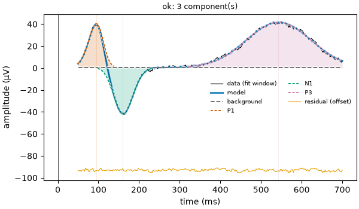

Note
Go to the end to download the full example code.
19: Beyond CCEP: one tool, many modalities¶
Fit scalp ERP and TMS-EEG with the same calls; only the preset changes.
Introduction¶
The first eighteen tutorials used CCEP (intracranial electrical stimulation), but
nothing in evoparam is tied to it. The same TrialSet, the same fit, the same
existence test and reports fit any evoked response: scalp ERP, somatosensory evoked
potentials (SEP), TMS-EEG (TEP), deep-brain ERNA, cochlear and spinal ECAP, animal field
potentials. What changes between them is the preset: the time window, the component
names, the background shape and the artifact method. There are eleven.
This tutorial fits two very different modalities with the same two lines each, then lists what the presets differ on.
# Import what we need
import warnings
from evoparam import models, plots, presets, reports
from evoparam.sim import simulate_erp, simulate_tep
A scalp ERP¶
simulate_erp makes an averaged scalp ERP: a P1, an N1 and a P3, on a slow drift, at
500 Hz. No stimulation artifact, so the erp preset does no artifact removal; its
window is 50 to 700 ms and its components are the classic ERP peaks (P1, N1, N170, P2,
P3, N400, MMN, N2pc, LRP, ERN).
erp_trials, _ = simulate_erp(60, n_channels=1, snr=5.0, seed=0)
print(erp_trials)
erp_fit = models.fit(erp_trials, "erp", random_state=0)
erp_table = erp_fit.to_dataframe().dropna(subset=["label"])
print(erp_table[["label", "latency", "amplitude", "fwhm"]].round(3).to_string(index=False))
fig = plots.plot_fit(erp_fit.get("Cz"))

<TrialSet | 60 trials × 1 channels × 500 times, -0.200 – 0.798 s, 500 Hz, uV, human, erp>
label latency amplitude fwhm
P1 0.095 39.841 0.042
N1 0.161 -42.389 0.056
P3 0.544 41.030 0.187
The P1, N1 and P3 come back at their true latencies, with the right sign. The only thing
that told evoparam this was an ERP and not a CCEP was the string "erp".
A TMS-EEG response (TEP)¶
simulate_tep makes a TMS-EEG response: the N15, P30, N45, P60, N100 and P180
components, at 5 kHz, with the things that make TEPs hard: a pulse artifact, a slow
decay artifact and a muscle artifact. The tep preset cleans them (interpolation plus
a subspace projection across channels) before fitting. We run the whole chain with
run_pipeline, as in tutorial 08.
tep_trials, _ = simulate_tep(40, n_channels=4, seed=0)
print(tep_trials)
with warnings.catch_warnings():
warnings.simplefilter("ignore")
tep_result = reports.run_pipeline(tep_trials, "tep", random_state=0)
tep_table = tep_result.group.to_dataframe().dropna(subset=["label"])
tep_columns = ["channel", "label", "latency", "amplitude"]
print(tep_table[tep_columns].round(3).head(8).to_string(index=False))
<TrialSet | 40 trials × 4 channels × 3000 times, -0.200 – 0.400 s, 5000 Hz, uV, human, tep>
channel label latency amplitude
Cz P180 0.208 1.083
Pz NaN NaN
Fz C1 0.200 -1.152
C3 C1 0.110 3.588
C3 C2 0.198 -6.970
Same run_pipeline call as the CCEP tutorial, a different preset. The slow decay
artifact that would swamp an early component is handled by the preset, not by you. TEP
is the hardest modality: the early N15 and P30 sit right after the pulse, and clean
recovery of the later N45 and N100 is still being validated, so read the TEP labels with
care and lean on the existence test and the figures.
What the presets differ on¶
Every preset sets the same handful of fields for its modality. Side by side, they show what actually changes from one evoked response to another: the time scale (microseconds for ECAP, hundreds of ms for ERP), the component names, and the artifact method (none for scalp, template subtraction for CCEP, periodic template for ERNA).
for name in ["erp", "sep", "ccep", "tep", "erna", "ecap"]:
preset = presets.get(name)
labels = ", ".join(list(preset.component_labels)[:4])
window = str(preset.fit_window)
method = str(preset.artifact_method)
print(f" {name:5} window {window:<16} artifact {method:<22} e.g. {labels}")
erp window (0.05, 0.7) artifact None e.g. P1, N1, N170, P2
sep window (0.01, 0.06) artifact interpolate e.g. N20, P25, N33, P37
ccep window (0.009, 0.5) artifact template+tail:joint e.g. N1, N2, delayed
tep window (0.012, 0.3) artifact interpolate+subspace e.g. N15, P30, N45, P60
erna window (0.0015, 0.0077) artifact period_template e.g. ERNA
ecap window (0.0003, 0.003) artifact paradigm:alternating e.g. N1, P2
presets.list() is the full registry with each preset’s validation status.
presets.get(name) returns one, and presets.derive(base, ...) makes your own from
a close one (a new window, an extra component) without starting from scratch, as the
presets tutorial shows.
Conclusion¶
evoparam is one engine with a preset per modality. Picking "erp", "tep",
"ccep" or any of the eleven sets the window, the components, the background and the
artifact method; everything you learned on CCEP, loading data, cleaning, existence,
trials, time-frequency, statistics and hierarchical models, works the same on every
other modality. When none fits, derive builds a custom preset from the nearest one.
Total running time of the script: (0 minutes 2.470 seconds)